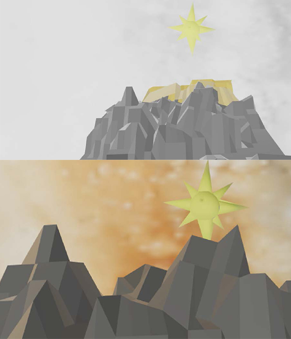

PROJECT 3
Guiding Lights
Project Page
Artist Statement
Guiding Lights is a project that was inspired by the grueling exodus of Yeonmi Park, after she escaped from North Korea for the hopes of a better future. The project is meant to trace some of her trials, of going through mountains and the Mongolian Desert, before arriving in South Korea. I also wanted to represent the guidance of the North Star and other cosmic objects, which provided guidance during this uncertain time in her life.